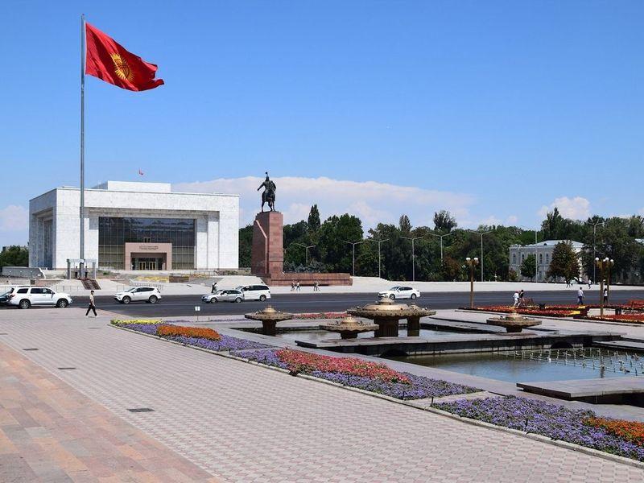
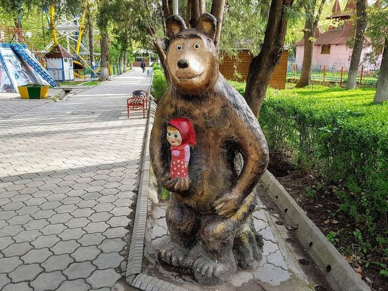
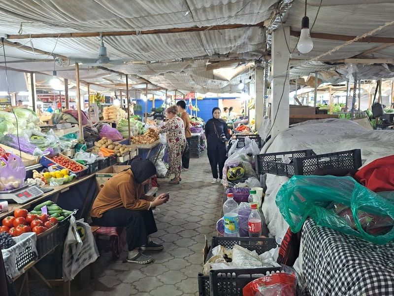
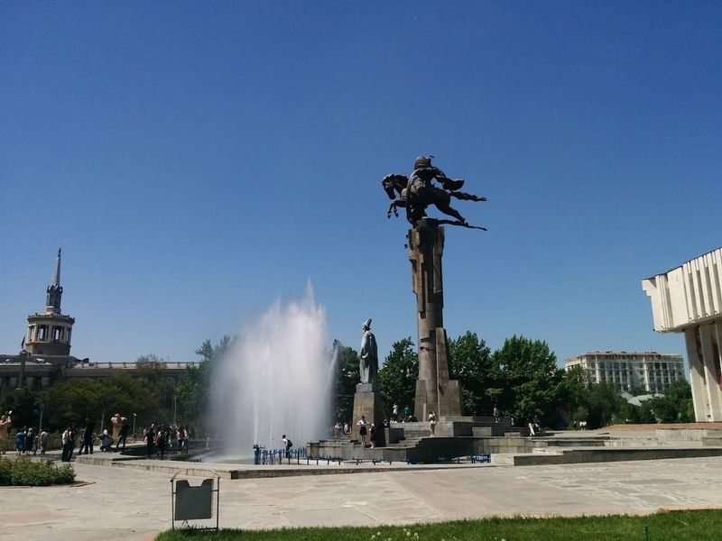
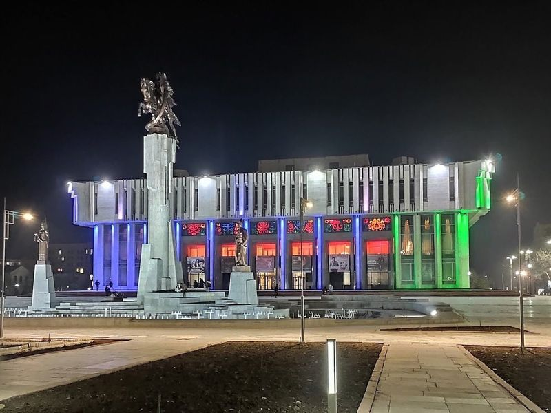
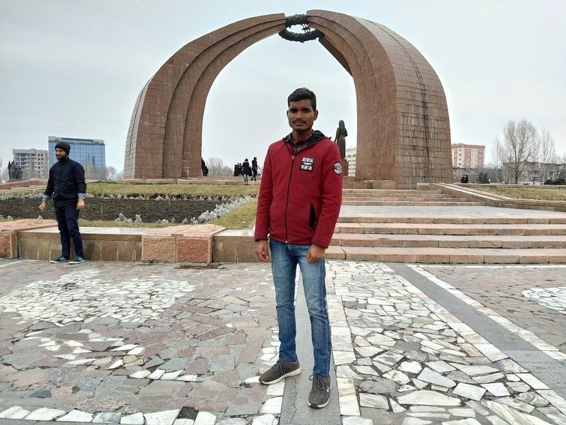
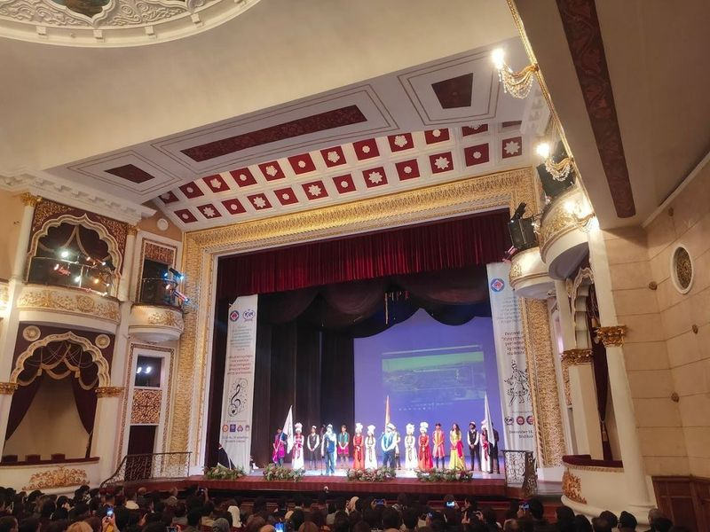
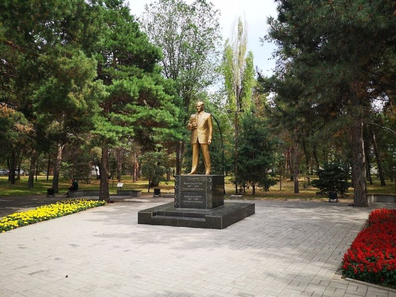
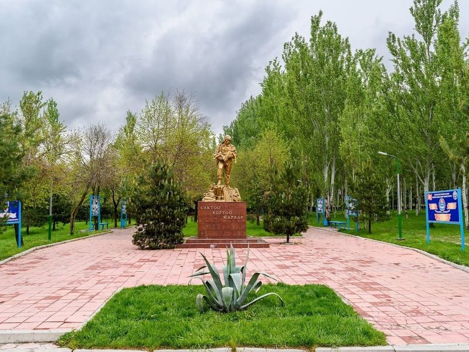
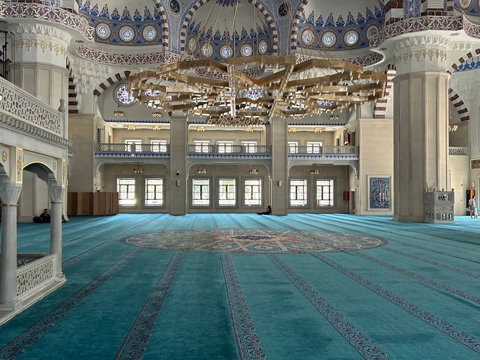

Explore Bishkek
A Brief History
Bishkek arose on caravan routes through the Tian Shan foothills and was developed as Frunze, capital of the Kyrgyz Soviet Socialist Republic, from 1926. Tree-lined boulevards, Soviet apartment blocks, and public squares were retained after independence in 1991. Ala-Too Square, Osh Bazaar, and nearby Ala Archa gorge show how the city governs a formerly nomadic republic now centred on agriculture and mountain tourism.
Attractions Map
Top Sights & Activities

Ala-Too Square
Ala Too Square is a spacious and vibrant public square located in the heart of Bishkek, serving as a focal point for various events and gatherings. The square is adorned with striking monuments and structures, including the State History Museum and the Manas Statue. Visitors can enjoy the sight of beautiful fountains, colorful flower beds, and benches where locals gather to relax.

Panfilov Park
Panfilov Park is a historic green space in Bishkek, featuring walking paths, a central fountain, and amusement park rides. The park is also home to the Zoological Museum and offers an interesting experience with its Soviet-era amusement park. In addition to the park's attractions, visitors can explore other outdoor sights such as Bishkek's Oak Park.

Dordoi Bazaar
Dordoi Bazaar in Bishkek is a sprawling and diverse marketplace that offers a wide range of goods. Unlike Osh bazaar, which mainly focuses on food, Dordoi is known for its wholesale and retail products. Alongside Tehran Grand Bazaar, it stands as markets in Asia. This expansive market caters to various needs, with small shops and stalls selling clothing, housewares, electronics, toys, shoes, and much more.

Toktogul Satylganov Philharmonic Hall
The Toktogul Satylganov Philharmonic Hall in Bishkek, Kyrgyzstan is a Soviet-era venue known for its classical music performances. The hall is surrounded by gardens featuring fountains and busts from a Kyrgyz epic, adding to its cultural charm. Named after the renowned Kyrgyz actor and poet, the theater offers visitors a unique glimpse into the rich arts and performance scene of Kyrgyzstan.

Manas Statue
Manas Statue is a significant cultural landmark that commemorates the legendary Kyrgyz folk hero, Manas. The statue is an essential part of the national heritage and represents the epitome of oral creativity. It's surrounded by picturesque scenery, making it a perfect spot to spend a relaxing day during summer. As dusk falls, the area comes alive with laughter and leisurely strolls, creating a calming atmosphere away from everyday hustle and bustle.

Victory Square
Victory Square, built in 1985 to commemorate the 40th anniversary of the end of WWII, is a poignant memorial honoring Kyrgyz soldiers who lost their lives in the war. The central monument features a woman standing over an eternal flame, symbolizing the waiting for loved ones who will never return from battle. Three red granite pillars represent a yurt, and the square serves as both a historical site and a popular meeting point in Bishkek.

Opera and Ballet Theater
The Kyrgyz State Academic Opera and Ballet Theater, situated in Bishkek, Kyrgyzstan, is a must-visit for tourists and art lovers. Established in 1959, this renowned theater presents a diverse array of opera and ballet performances year-round. Its striking architectural design seamlessly blends modern aesthetics with traditional Kyrgyz elements. The theater hosts performances by local students as well as high-caliber shows by Russian and Kyrgyz artists.

Ata Turk Park
Ata Turk Park is a spacious and peaceful park featuring a war memorial and a statue of Turkey's first president, Ataturk. The park offers plenty of shade from the numerous trees, making it an ideal spot to relax even during hot summer days. It provides a serene environment away from the hustle and bustle, offering privacy and clean air for visitors to enjoy.

Victory Park
Victory Park in Bishkek is a spacious public square commemorating the triumph over Nazi Germany during WWII. Its main attraction is a statue of a Kyrgyz woman patiently awaiting her husband's return from the war, complemented by an everlasting flame. Adjacent to her are three segments of crimson granite that come together above her in a tunduk formation, embellished with the Soviet hammer and sickle emblem at its center.

Central Mosque
Located just west of the city center, Central Mosque is a well-preserved and modestly designed place of worship with a large inner courtyard, central dome, and prominent minaret. The mosque features ornate interiors and nighttime illuminations that make it a sight to behold. Despite being located near the bustling capital city of Bishkek, there are plenty of natural sites nearby for outdoor enthusiasts to explore.